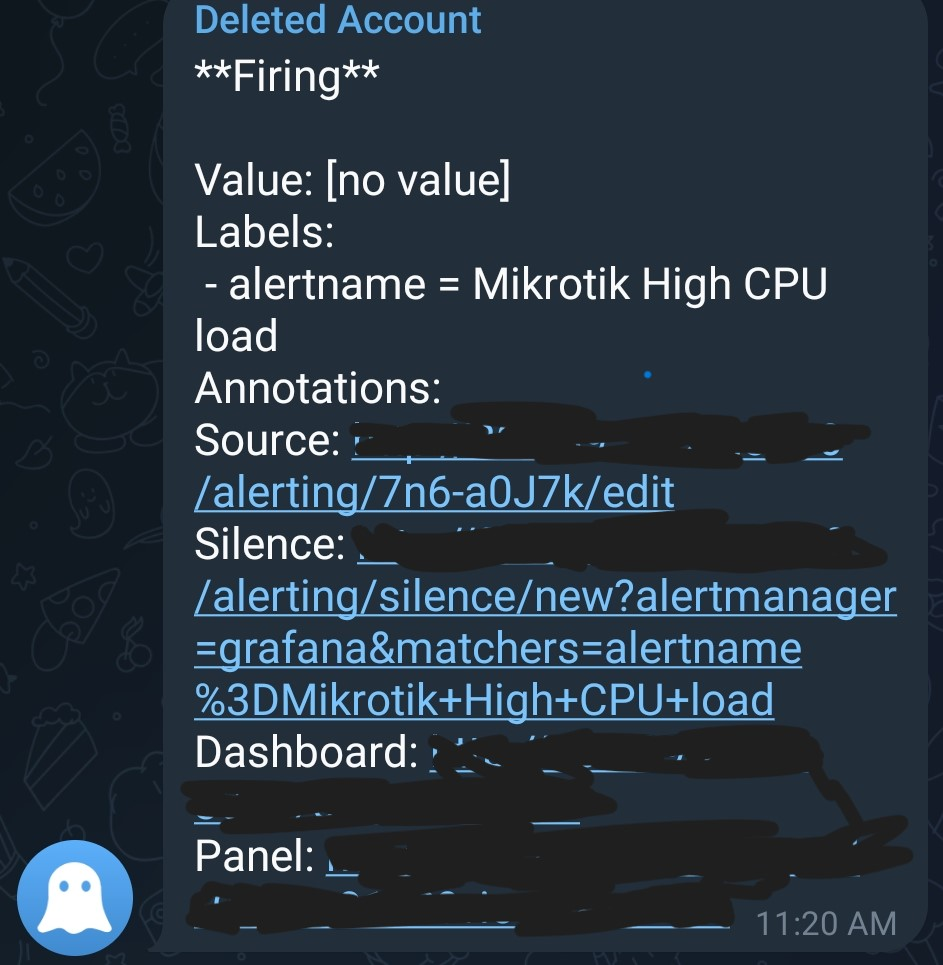
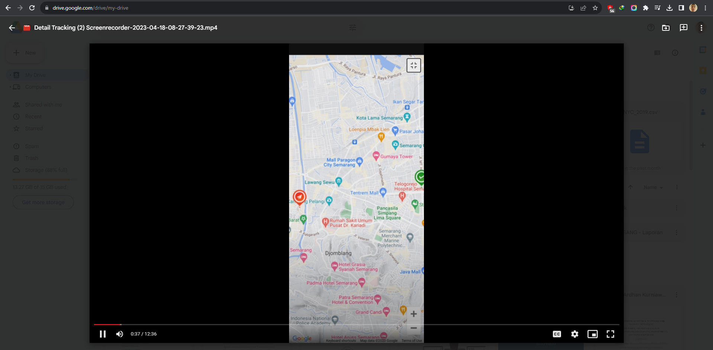

Portofolio

Tugas Akhir SMK ~ Monitoring Resource Network
- Tujuan Tugas Akhir
- Memonitoring kesehatan router
- Melihat apakah traffic internet tinggi atau tidak
- Alat dan Bahan
- Winbox
- Grafana
- Prometheus
- SNMP Exporter
- Virtualbox
- Router Mikrotik

Membuat Tracking Kurir ~ Menggunakan Google Maps API
- Tujuan Tracking Kurir
- Memonitoring kurir
- Melihat apakah kurir lewat rute yang sesuai / mengantar pesanan lain dahulu
- Apakah kurir start dari tempat mitra dahulu
- Alat dan Bahan
- Google Maps API (web base)
- Web Browser
- Laptop
- Smartphone